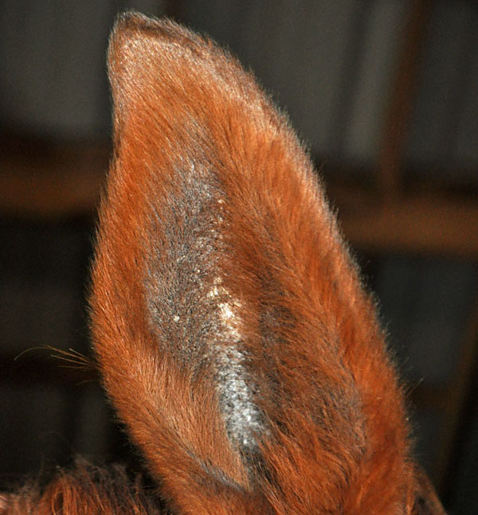
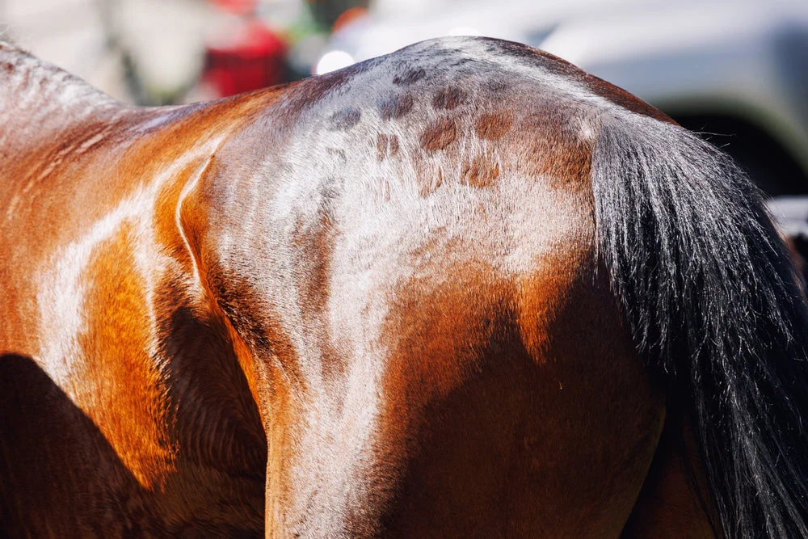
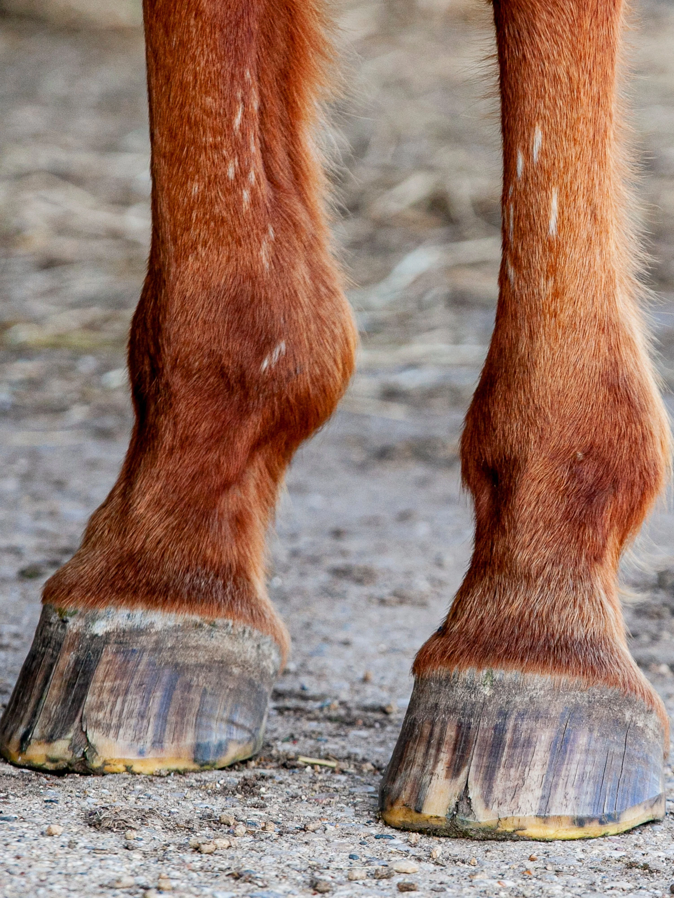

موسوعة أمراض الخيول
دليل شامل للتعرف على أمراض الخيول وأعراضها وطرق علاجها.
دليل شامل للتعرف على أمراض الخيول وأعراضها وطرق علاجها.

يمكن أن تنتج أمراض الأذن عن عدوى أو طفيليات مثل العُثّ. قد تهزّ الخيول رأسها أو تُظهر انزعاجاً عند اللمس. التنظيف والرعاية البيطرية مهمان لتفادي المضاعفات.

أمراض الأطراف شائعة جداً بسبب الحركة المستمرة والضغط. تشمل إصابات الأوتار والكسور ومشاكل المفاصل. قد تُظهر الخيول عرجاً أو تورماً أو ألماً أثناء المشي.

تنتج أمراض الجلد غالباً عن طفيليات أو فطريات أو حساسية. تشمل العلامات الحكة وتساقط الشعر والاحمرار أو الجروح.

قد تؤثر أمراض الرأس على الدماغ أو الأعصاب أو الجيوب الأنفية. الأعراض قد تشمل إمالة الرأس وضعف التوازن أو السلوك غير المعتاد.

يمكن أن تؤثر أمراض العيون على الرؤية وتتفاقم بسرعة. تشمل الأعراض الاحمرار والدموع أو الحساسية للضوء.
تشمل أمراض الأنف عادةً التهابات الجهاز التنفسي أو الحساسية. قد تُعاني الخيول من إفرازات أنفية أو سعال أو صعوبة في التنفس.

يمكن أن تكون الأورام حميدة أو خبيثة. قد تظهر كتكتلات على الجلد أو داخل الجسم. الكشف المبكر يساعد في إدارة الحالة بفعالية.

تشمل أمراض المعدة المغص، وهو من أكثر المشكلات شيوعاً في الخيول. الأعراض تشمل الألم والأرق وفقدان الشهية. التغذية السليمة والرعاية ضروريتان للوقاية.

تؤثر أمراض المفاصل على الحركة والمرونة. تشمل التهاب المفاصل والالتهابات. قد تُظهر الخيول تيبساً أو صعوبة في الحركة. التمرين المنتظم والرعاية يمكن أن يحسّنا صحة المفاصل.
احصل على إرشادات بيطرية متخصصة مصممة خصيصاً للحفاظ على تراث الخيول.